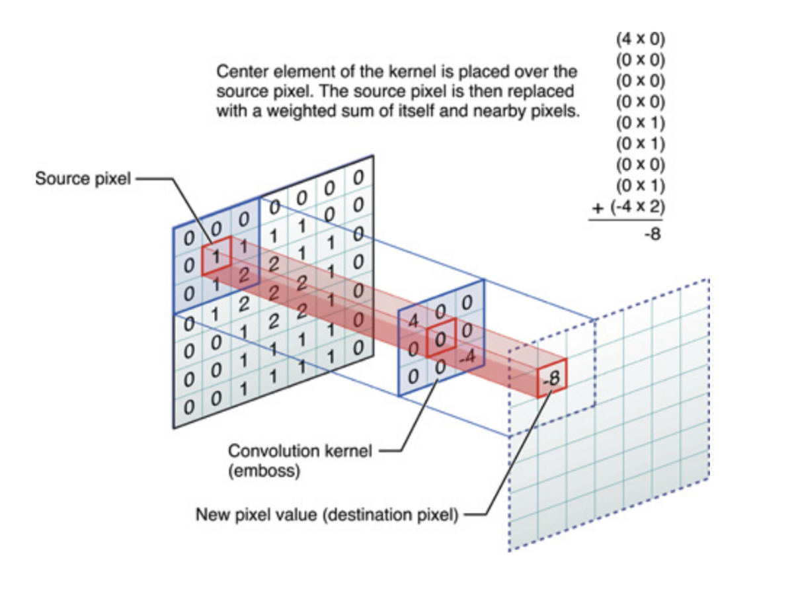

The DNNs: An Overview
Recurrent Neural Networks
A network that performs well with sequential data is an RNN. By transferring data from the previous input's hidden layer to the current input's hidden layer, they take advantage of the ordering information. As a result, the model can have historical context.
For instance, one must be aware of the words that came before a word in order to comprehend its context in a sentence. In order to deal with this, the inputs are organized according to their sequence, and the model additionally receives data from the preceding hidden layer each time an input is sent to it.
The similar idea applies to sequences of DNA and RNA in biology, where the orderly arrangement of nucleotides or amino acids is of relevance.
But occasionally, historical data isn't the only knowledge the model can use to its advantage. The model could comprehend the context much more if it had access to future data. If a model understood the words that came before a word when examining it again in a phrase, it might be able to understand the word's context better.
As a result, bidirectional recurrent neural networks (RNNs) were developed, including an extra layer that carried information directed from the current input to the subsequent input. When trained, this enables models to integrate into the output a hidden layer that gets data from earlier levels and a hidden layer that gets data from later layers.
Convolutional Neural Networks
CNNs are frequently applied to photos where the data-related placement of neighboring pixels is relevant. CNNs are a particular kind of feed-forward artificial neural network, with neuronal connection patterns modeled after the structure of the visual cortex. This neural network is made up of several receptive field layers.
Consider an octagon as an example. A recognized pattern can be dissected and reconstructed using CNN's multiple layers feature, allowing it to be recognized as an octagon. The model discovers in the first layer that diagonal, horizontal, and vertical lines are the octagon's most fundamental shapes. The model then learns how to combine these forms to create the octagon using each successive layer.

A CNN learns several kernel weights in order to function. The hidden layer's output will have a high signal when a particular feature matching the kernel is identified by the kernel matrix, which functions as a sliding window scanning the image. The model aims to train these kernels so that every one of them can identify a distinct feature that is pertinent to the input's classification.

The result of every convolution layer is a collection of photos since it has to train several kernels. The outcome of each image, or feature map, is obtained by scanning it with the corresponding kernel. Afterwards, pooling is typically utilized to minimize the feature space. The feature maps are combined and fresh kernels are taught for each succeeding convolution layer.
LSTM or The Long Short-Term Memory Network
Certainly! The Long Short-Term Memory (LSTM) network is a type of recurrent neural network (RNN) architecture designed to capture and process long-term dependencies in sequential data. It addresses the vanishing gradient problem often encountered in traditional RNNs.
Let's break down the math behind an LSTM unit. An LSTM unit has several components, including a cell state, input gate, forget gate, output gate, and various matrices and vectors.
Input Gate: The input gate determines how much of the new information should be stored in the cell state.
Forget Gate: The forget gate decides what information from the cell state should be thrown away.
Cell State: The cell state is updated based on the input, forget, and previous cell state.
Output Gate: The output gate decides what the next hidden state should be.
Here: is the input at time , is the hidden state from the previous time step, is the sigmoid activation function, is the hyperbolic tangent activation function, and are weight matrices and bias vectors.
These equations describe how the LSTM unit updates its cell state and hidden state over time, allowing it to capture long-term dependencies in sequential data. The gates control the flow of information, and the cell state acts as a memory that can be updated or forgotten based on the input and previous states.
The image contains a set of equations related to LSTM (Long Short-Term Memory) neural networks, which are a type of recurrent neural network (RNN) architecture used in the field of deep learning. Here are the equations in LaTeX format:
These equations represent the various gates and state updates within an LSTM cell, including the update gate (), forget gate (), output gate (), candidate cell state (), cell state (), and the hidden state (). The represents the sigmoid activation function, and denotes element-wise multiplication (Hadamard product).